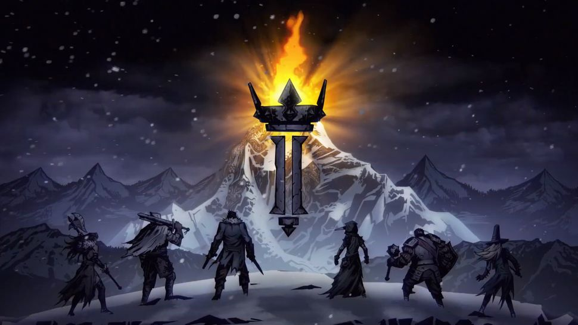

| Many Fisherfolk apply Bleed damage, and are likewise fairly resistant to Bleed. A large number of Fisherfolk have abilities that Move move or shuffle the party. Not only does this disrupt the party's formation, but it also indirectly inflicts Bleed via Barnacles. | |
|---|---|
As with all Creatures, the Swine are highly resistant to Blight.
Swine Skulkers have a unique buff when stealthed, giving them more DMG and CRIT, this gives them a potential for heavy damage, It is advisable to carry some form of Stealth removal when entering this region
Swine Brutes and Wilbur deal heavy cleave damage and Stress. It is advisable to kill these enemies first if possible and use blinds weak debuffs to keep them at bay.
Combat turnorder enemy cave swine skiverSwine Skivers are very dangerous enemies, dealing heavy damage, vulnerable debuffs and Move skills
Disruption to the Party. If possible they should always be killed on sight. |
|
Cadavers enemies tend to have high health and rely on block for defense.
Bleed is the only type of damage over time inflicted by Cadavers. Likewise they are resistant to Bleed, somewhat resistant to blight, and weak to burn.
Drummers boost their allies by granting them order tokens as well as making them practically immune to move. Killing the Drummer is a high priority.
bishop With enough benedictions Bishops can resurrect dead allies, making them high-priority targets.
Foot Soldiers can generate Block alonside Drummers and deal a considerable amount of damage. Dots are the most effective way to kill them.
Arbalests are strong damage dealers, but become much less effective in the front ranks.
knight Unlike other enemies in this game, Knights become stronger when reaching Death's Door. |
|
Perhaps unsurprisingly, Fanatics are highly resistant to Burn and deal a lot of Burn damage.
Fanatics have relatively low health compared to other factions. Instead, they tend to apply tokens like blind and dodge to disrupt heroes' attacks.
Immolatists and Her Ladyship deal high Burn damage, stress damage, can Ignite other Fanatics, and can consume corpses to heal other Fanatics. She is therefore your highest priority.
Whippers, when Ignited, can use Infernal Taskmaster, a devastating party-wide AoE that does HP damage, stress damage and Burn. Killing this enemy in round 1 is important so he doesn't ignite.
sacrificial Don't let Sacrificials reach Rank 1!
Pit Fighters will start with relatively weak attacks, but upon casting Accelerant will gain speed and damage at the beginning of every round.
Shamans make their allies harder to hit by blinding heroes or granting dodge to their allies.
Flayers can generate constant Riposte and Dodge tokens, making them very dangerous, but have relatively low base Icon HP. |
|
Eaters are highly resistant to Blight.
Corpse-clearing skills and items are useful for preventing Plague Eaters from gaining corpulent tokens.
Butcher can disrupt the party and apply Bleed. Their low base damage makes these enemies not very dangerous.
Dinner Cart deals huge Blight damage while inflicting Negative Tokens. But its low debuff resistance makes it easy to control if you have blind, weak.
Maid deals considerable damage to the back ranks but is less efective in the fronk ranks. Gives buffs to Livestock/Black Phillip.
Livestock receive buffs, depending on what other Plague Eaters are present on the battlefield. They Move disrupt, deals huge damage, Riposte and can inflict Disease. It is advisable to kill these enemies first.
Lord can heavily disrupt the front ranks with a powerful Back Move
attack.. It is recommended to Blind , Weak these enemies to keep them under control.
Lady can heavily disrupts all ranks with constant stress and cleave attacks that Shuffle. It is advisable to kill these enemies first if possible. |